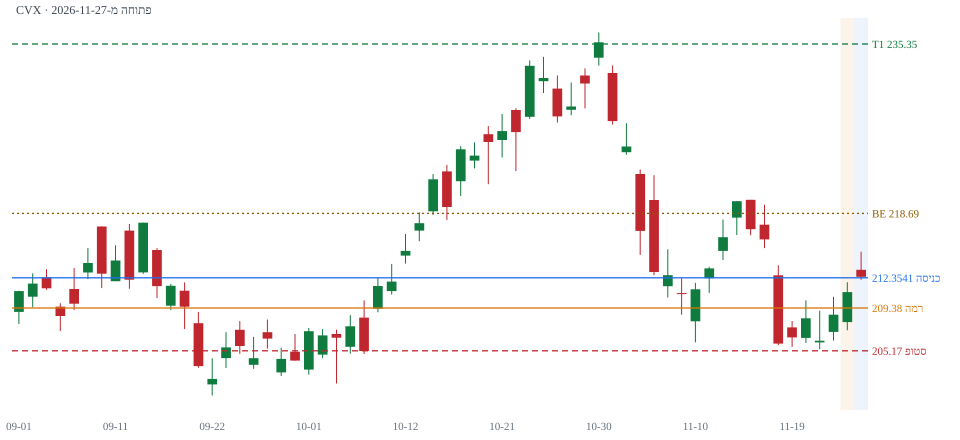

פוזיציות פתוחות
| טיקר | כיוון | נפתח | כניסה | מחיר | רווח/הפסד | R כולל | |
|---|---|---|---|---|---|---|---|
| ‹ | DUOL | לונג | 2026-11-25 | 152.6100 | 155.46 | +$37.05 | 0.19R |
סטאפtrendline מניות (נותר/סה״כ)13/13 עלות$1,983.93 סטופ137.94 סטופ התחלתי137.94 BE166.60 יעדים192.97 (2.75R) 213.37 (4.14R) סיכון פתוח$190.71 ממומש$0.00 יציאה לפני דוח2027-02-23 גרף וניתוח מלא:  מה אמרו לפני הכניסה0 בעד1 מעורב0 נגד סורק (מנוע) ציון סיכויי הצלחה לפי החוקים: רמה, ווליום, מגמה, שוק, חוזק יחסי, בסיס, מרחק מהממוצע 50.5/10010 נגיעות · ווליום פי 0.40 · R משוקלל 3.82
סוקר עצמאי Claude על Opus, כסוכן נפרד: רואה רק את הגרף והתוכנית, בלי הציון ובלי ה-PASS לא נבדק חדשות כותרות החברה מ-4 הימים שלפני הפתיחה: האם קרה משהו מהותי נגד הכיוון לא נבדק פנדמנטלי מכפילים, צמיחה, מרווחים, חוב, מגמת אנליסטים והפתעות בדוחות: האם החברה תומכת בכיוון לא נבדק הכלים רק מייעצים ונמדדים כחוקי צל; הם לא משנים פקודות. | |||||||
| ‹ | CVX | לונג | 2026-11-27 | 212.3541 | 212.59 | +$6.84 | 0.03R |
סטאפbreakout מניות (נותר/סה״כ)29/29 עלות$6,158.27 סטופ205.17 סטופ התחלתי205.17 BE218.69 יעדים235.35 (3.20R) + ראנר 25% בטריילינג סיכון פתוח$208.34 ממומש$0.00 יציאה לפני דוח2027-01-27 גרף וניתוח מלא:  מה אמרו לפני הכניסה1 בעד2 מעורב1 נגד סורק (מנוע) ציון סיכויי הצלחה לפי החוקים: רמה, ווליום, מגמה, שוק, חוזק יחסי, בסיס, מרחק מהממוצע 43.4/100רמה 209.38 · ווליום פי 0.85 · R משוקלל 3.46
סוקר עצמאי Claude על Opus, כסוכן נפרד: רואה רק את הגרף והתוכנית, בלי הציון ובלי ה-PASS 2/5 · מפוקפקנגד: פריצה של בסיס קטן אחרי ירידה מ-236, בווליום מתחת לממוצע, ואספקה כבדה ב-216-220 וב-222-227 כבר בתוך 1-2R. בעד: חוזק יחסי מול SPY חלש, סגירה ליד הגבוה וסטופ מתחת לתחתית משולשת ב-205.3. נבדק 2026-11-27 חדשות כותרות החברה מ-4 הימים שלפני הפתיחה: האם קרה משהו מהותי נגד הכיוון זהירותזעזוע נפט: Brent ~94.6 אחרי תקיפת בית זיקוק סעודי (26.11), גולדמן צופה ירידה של ~10$ ב-2027; תנודתיות גבוהה נבדק 2026-11-27 פנדמנטלי מכפילים, צמיחה, מרווחים, חוב, מגמת אנליסטים והפתעות בדוחות: האם החברה תומכת בכיוון תומך בכיווןתומך בלונג: הכנסות +35% ו-EPS +178% ברבעון האחרון מול אשתקד, 4 הפתעות חיוביות ברציפות, האנליסטים משדרגים (Strong Buy 7→9), מכפיל 15 וחוב נמוך (0.17). בטא 0.5 – המניה זזה בעיקר עם הנפט. נבדק 2026-11-27 הכלים רק מייעצים ונמדדים כחוקי צל; הם לא משנים פקודות. | |||||||
לחיצה על שורה פותחת את כל הפרטים: סטופ, יעדים, מימושים, גרף, ומה כל כלי אמר לפני הכניסה. רווח/הפסד = ממומש + לא ממומש. R כולל = רווח/הפסד ÷ הסיכון המתוכנן. המחיר הוא העסקה האחרונה בזמן העדכון.